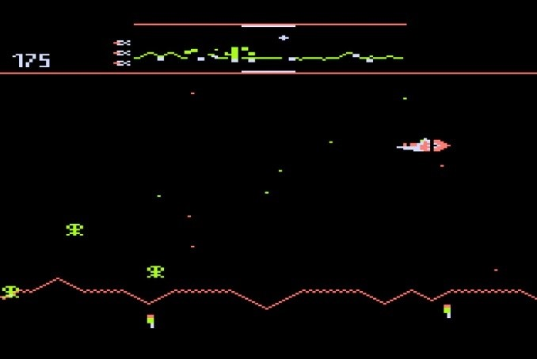
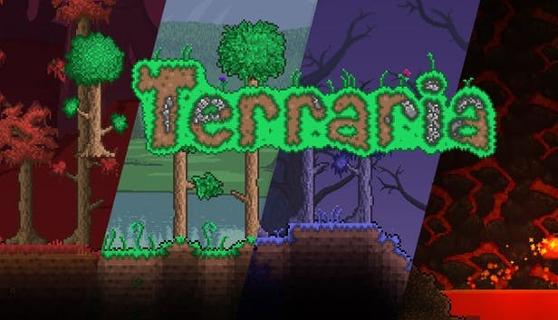

The first game to use the sidescrolling feature was called Bomber made by Sega, however there is not much information on the game. The next popular game is called Defender and is an arcade game that was released in 1981. It was a horizontal scrolling shoot 'em up, where the game is set on an unnamed planet where the player must defeat waves of invading aliens while protecting astronauts.
Terraria is one of the more popular sidescrollers, as the gameplay involves exploration, crafting, building, and combat with a variety of creatures in a procedurally generated 2D world. The player can encounter many different enemies in Terraria, such as simple slimes, zombies, demon eyes, and various biome-specific enemies. The player may also battle boss monsters during the game with a number of different combat mechanics that can drop rare items and large amounts of in-game currency.
